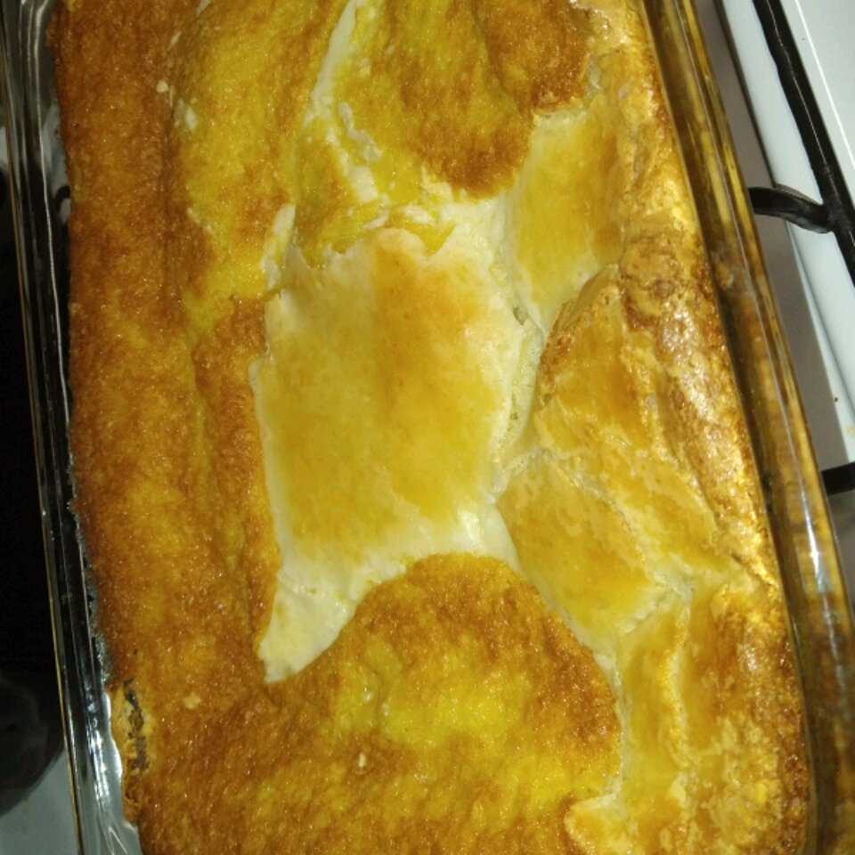

Gooey Butter Cake

Description
The most banger gooey butter cake you've ever had
Ingredients
- 1 (18.25 ounce) packaged yellow cake mix
- 1/2 cup butter, melted
- 4 large eggs, divided
- 2 teaspoons vanilla extract, divided
- 1 (8 ounce) package cream cheese
- 4 cups of confectioners' sugar
Steps
- Preheat oven to 350 degrees F(175 degrees C)
- Mix cake mix, melted butter, 1 teaspoon vanilla, and 2 eggs with a spoon. Pat into a 9x13-inch pan.
- Mix cream cheese, remaining 2 eggs, and remaining 1 teaspoon vanilla with an elextric mixer. Slowly beat in confectioners sugar. Pour over cake layer.
- Bake for 40 to 45 minutes. Cool